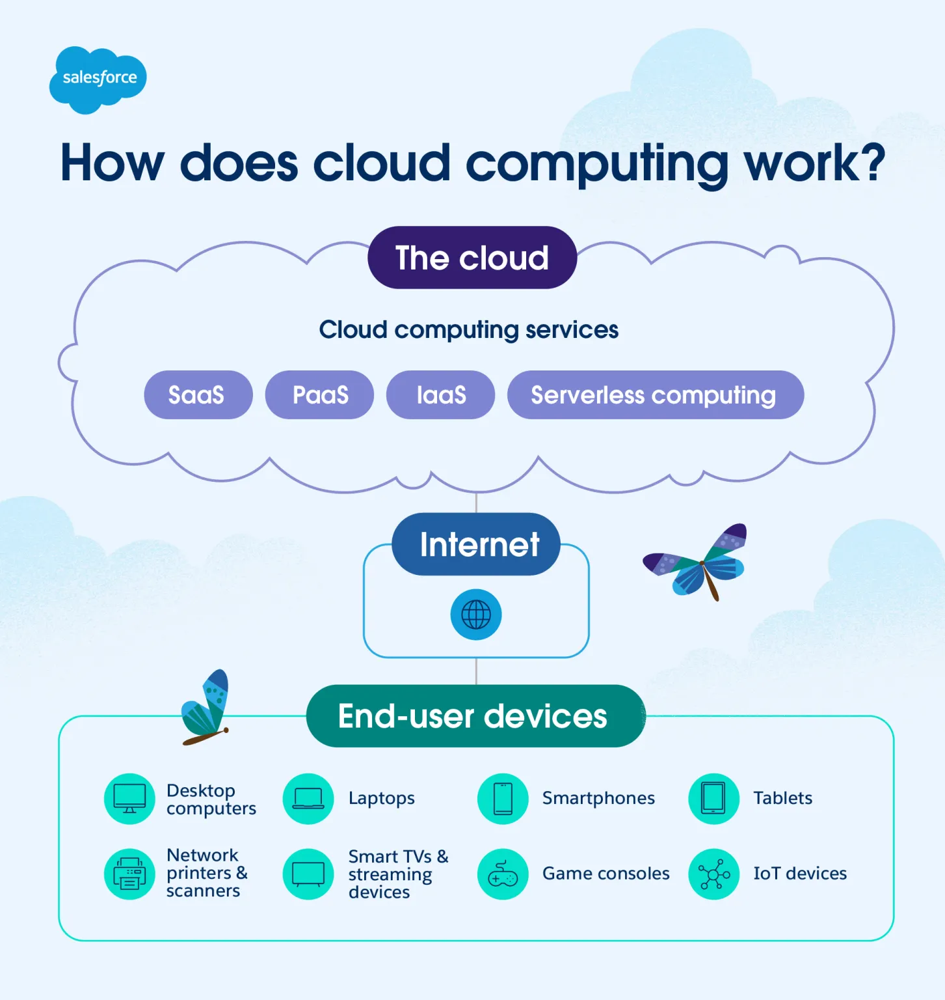
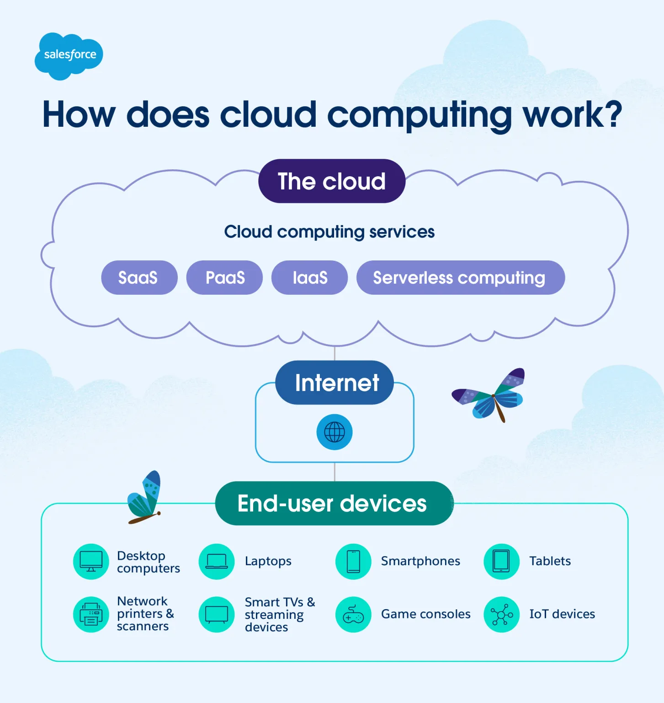
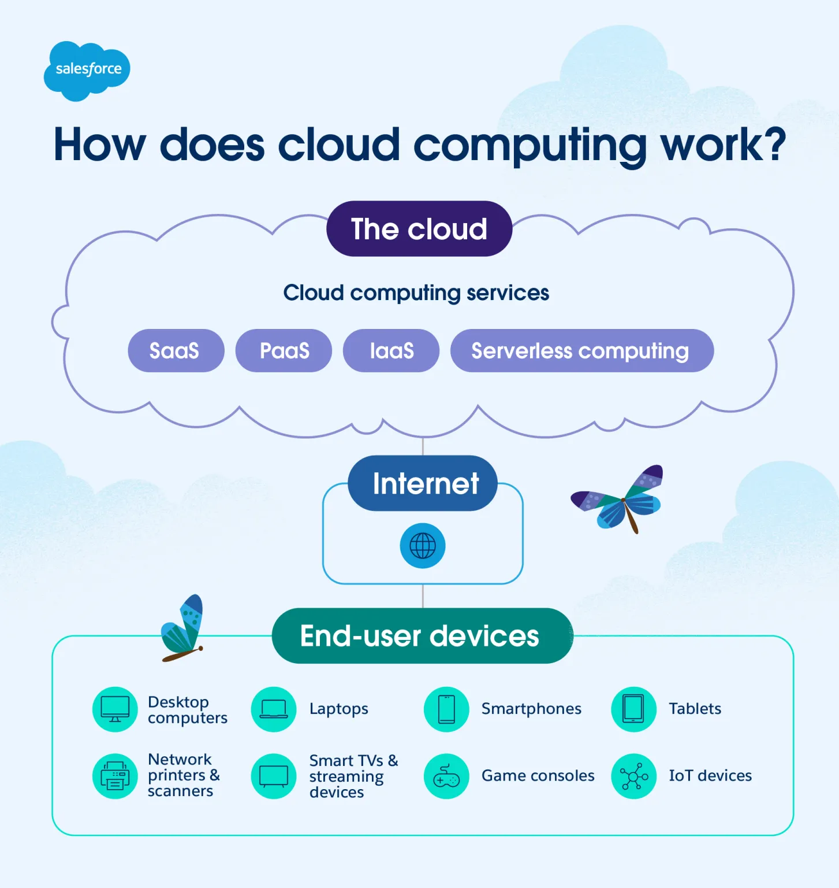

Cloud Computing
Cloud computing allows data and programs to be stored and processed over the internet instead of a single computer. This makes use of bandwidth, scalability, and global protocols to deliver services quickly and reliably.
 

I want to study coding and become a data scientist. Data is made up of bits and bytes, and by learning to process and analyze it, I can transform raw information into knowledge. I’m especially interested in how cloud computing and computer networks allow people all around the world to share data seamlessly.
Unit 1: Data is represented in bits and bytes. Metadata describes data, while lossless and lossy compression determine how data is stored. Analog data can be converted to digital, and issues like roundoff appear when precision is limited.
Unit 2: A computing device connected to a computer network communicates using protocols. The internet is fault tolerant and scalable, with routers choosing the best path for packets. Tools like DNS, IP, TCP, and HTTP make the World Wide Web possible.
Cloud computing allows data and programs to be stored and processed over the internet instead of a single computer. This makes use of bandwidth, scalability, and global protocols to deliver services quickly and reliably.
